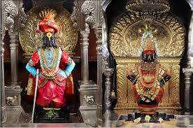

Siddheshwar Temple


Dedicated to Lord Siddheshwar, a form of Lord Shiva, the temple is located near the peaceful Siddheshwar Lake in the center of the city[cite: 15, 16]. Thousands of devotees visit daily, especially during the Siddheshwar Yatra festival held every year in January[cite: 17].
Pandharpur


Located about 70 km from Solapur, Pandharpur is famous for the Vitthal Rukmini Temple dedicated to Lord Vitthal[cite: 19, 20]. It is a major spiritual center during the Ashadhi and Kartiki Ekadashi festivals[cite: 21].
Tuljapur Pilgrimage


Solapur serves as a vital gateway to nearby pilgrimage destinations. These spiritual sites attract millions of devotees every year seeking blessings and cultural connection[cite: 7].
Akkalkot
Located about 40 km from Solapur, it is famous for the temple of Shri Swami Samarth Maharaj[cite: 23, 24]. The temple atmosphere is calm and peaceful, attracting visitors from all over the country[cite: 26].
Solapur Fort (Bhuikot Fort)
Built during the Bahmani Sultanate period, this historic monument reflects the military architecture of medieval India and the rich heritage of Solapur[cite: 27, 28, 29, 30].